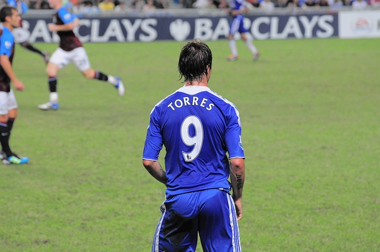

How It All Began
Back in 2011, soccer was the heartbeat of my neighborhood—everyone played, and the passion for the game was contagious. Every day, my friends and I would hit the field, our lives revolving around every kick and goal. With my birthday approaching, my brother asked what gift I’d like. Without much thought, I simply said, “A soccer jersey,” because almost everyone already had one. Yet when he pressed for specifics—like which team or which player—I couldn’t give a clear answer. I knew of many teams and players, but at that time, I hadn’t found a favorite.
In a spur-of-the-moment decision, I told my brother to choose for me. That summer, the transfer window was ablaze with excitement when Chelsea made headlines by signing a superstar for a record-breaking fee. The move was both shocking and thrilling—everybody was talking about it. When my birthday arrived, my brother surprised me with a Chelsea jersey. I didn’t fully realize it then, but that jersey marked the start of a new passion. From that day forward, I became an unwavering Chelsea fan, a loyalty that has grown with each game and every season.
5 Best Chelsea player OAT in my opinion:
- Eden Hazard
- John Terry
- Frank Lampard
- Petr Cech
- Didier Drogba
Contact Me
Email: sailibekov.a@northeastern.edu
LinkedIn: LinkedIn